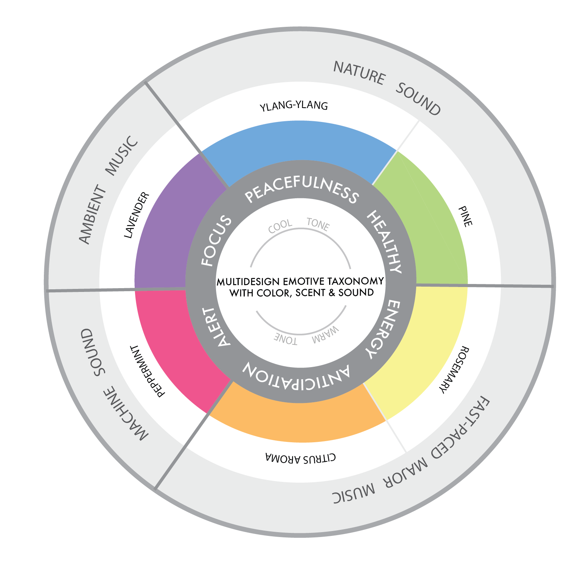

ABSTRACT
Scentery proposes a novel approach to create calming multisensory environments by displaying visualizations, reproducing audios and activating olfactory sensations. By the use of recent literature, we introduce an initial Emotive Design Taxonomy that intersects emotions, and colors, sounds and scents. Scentery’s users switch between different multisensory scenarios that promote calm sensation. The first VR scenario immerses the user into the scenery of lavender field, which bursts into a carnival of purple, a lavender scent and ambient instrumental sound. The other scenario is the scenery of raining forest, a ylang-ylang scent and nature sound. Scentery was developed with Unity 3D for creating the 3D scenarios, Unity Remote for the camera control and viewer’s perspectives, and a microcontroller for triggering the scents in the vaporizer.
INTRODUCTION
Nowadays stress levels continue to increase throughout the general population and the ability to find coping mechanisms becomes more essential to reach a healthy mental condition. A study from the National Institute of Mental Health states that people who go through or experience a long-term source of stress could have health problems, and this source can affect them chronically if the stress they respond to is constant or goes on for too long. McEwen has suggested that our biological set points at which a variable physiological stabilize state changes when chronic stressors occur across the lifespan, and as the stressors accumulate the biological cost of these changes are linked to chronic illness.
Environmental factors, calming environment could psychologically reduce stress levels and increase an emotional sense of engagement. Virtual Reality (VR) is a computer-generated environment that can simulate a calming, relaxing environment to help cope with stress. We investigate the psychological potential of VR with the senses of hearing and smell to promote a calm environment. Our design goals proposes an Emotive Design Taxonomy that focus on the analysis of recent research on emotions, and its relationship to colors, scents, and sounds for multisensory environments.
Scentery focuses on the calm emotion to create an experience of VR displays integrated with sound and generates the olfactory stimulation for augmented sensation. In this paper, we explain the technology and implementation of two scenarios that promotes this multisensory environment for the calm emotion.
EMOTIVE DESIGN TAXONOMY WITH COLOR, SCENT, AND SOUND
Even the vast research on emotions and their relationship with color, scent or sound, we focus in specific references that could be applied for VR environments. We investigate the representations of these factors and create a summary that reflects their emotional effects. We also summarize their combinations that potentially can be the most effective design choice for creating a calm multisensory environment.

TECHNOLOGY DESCRIPTION
To execute the working prototype, we use a smart phone inserted in a VR headset as the viewer to display the scenarios in the virtual reality environment. In order to continuously track the changes of the user’s head rotation, we programmed a script and attached it to the camera in the building environment. The script modified camera in the building scene constantly rotates along with the position changes of the accelerometer inside the smartphone while connected to Unity 3D. To create the stereoscopic view on the smartphone, we rendered the view with two cameras which are placed at slightly different angles to create an illusion of depth and perspective view. We also use Arduino Uno, a microcontroller board, along with the VR program to activate triggers programmed in the VR environment.
SCENT RELEASE
The scent is released by the triggers programmed in the microcontroller connected with Unity 3D. For the mechanics of the olfactory device, the water vaporizer collides the oil-based scents at high pressures to produce atomized water or the vaporized water. Two vaporizer are connected to the microcontroller. The vaporizer converts water into vapor and emit the scents for 10 seconds.
- PUBLICATION -
MobileHCI 2018 - Present In Both Poster and Demonstration Session
Authors: Elle Luo, Katia Vega
Video production: Christine, Chong, Elle Luo